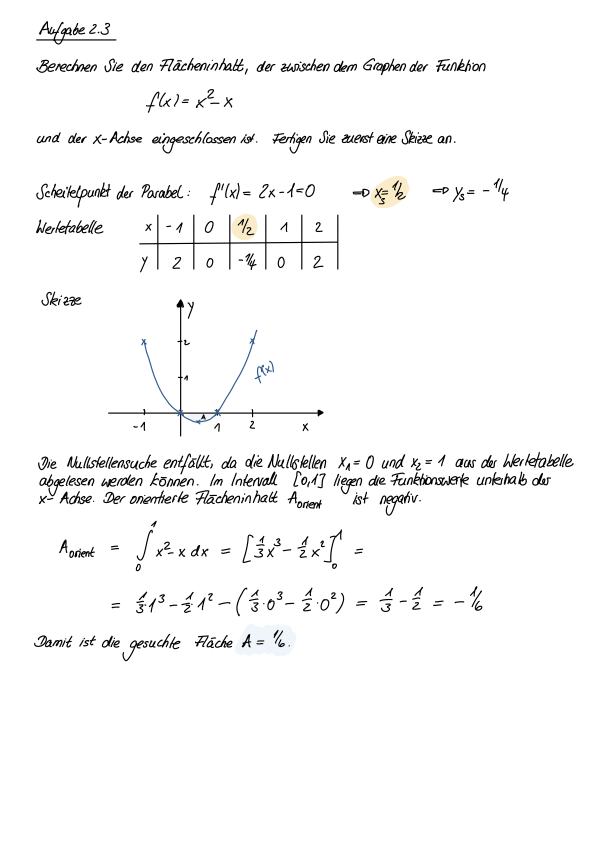
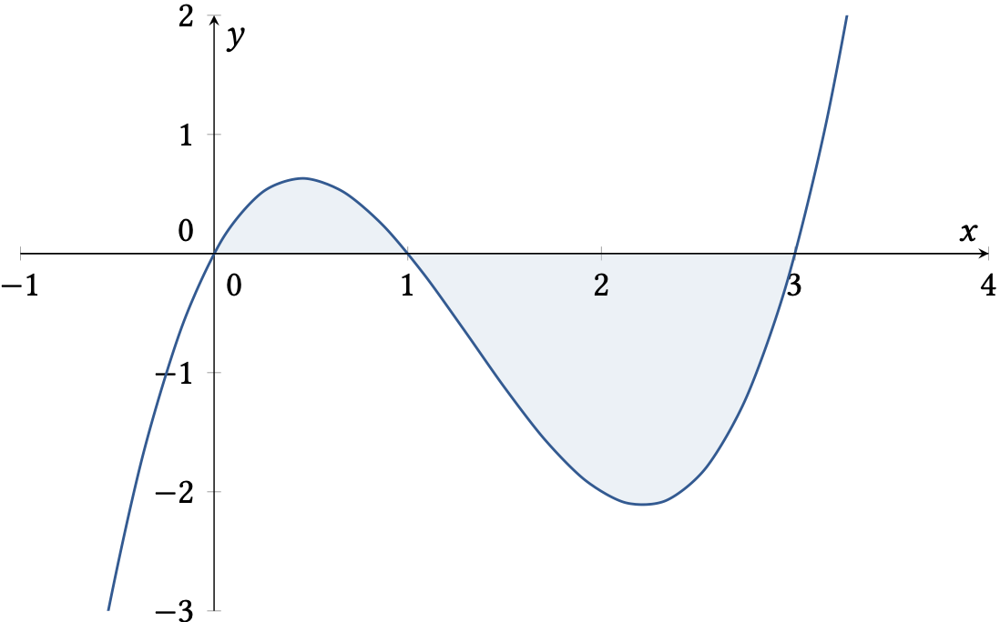
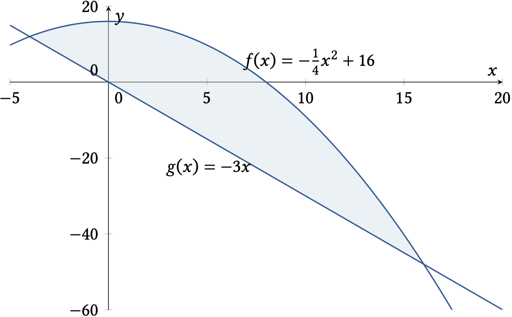
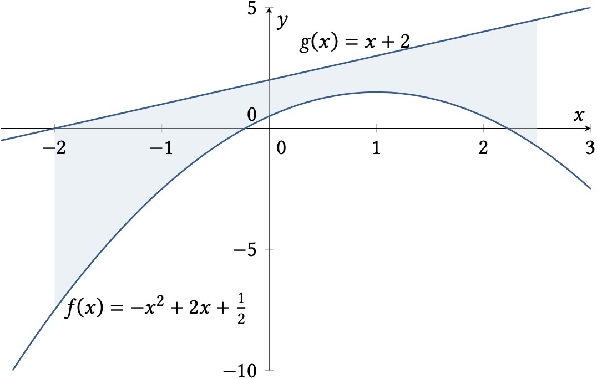
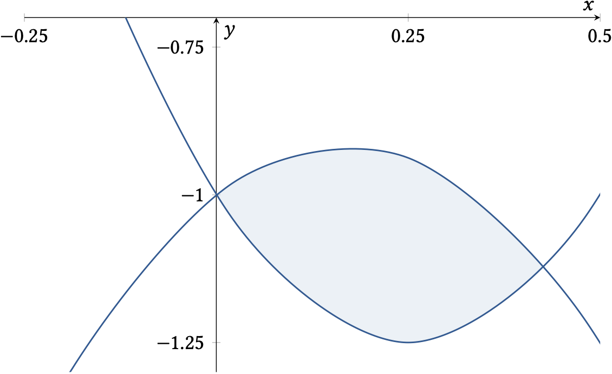
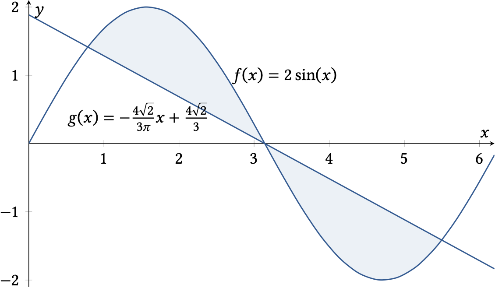
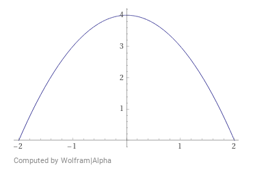
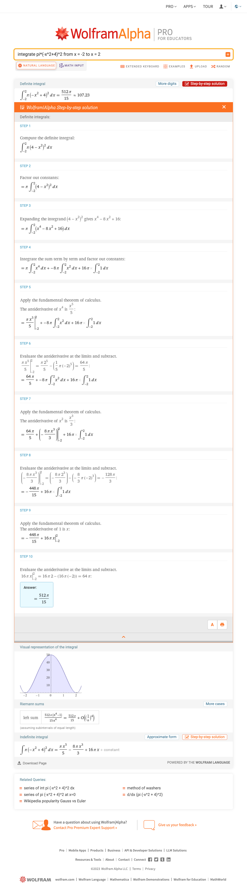
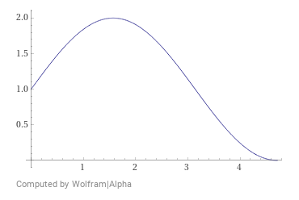
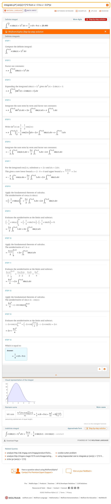

Übungen zum Selbstudium#
Übung 2.1
Berechnen Sie den Mittelwert der Funktion \(f(x)=\frac{1}{2}x^2 +1\) im Intervall \([0,2]\).
Lösung
Lösungsweg
Übung 2.2
Berechnen Sie den Mittelwert \(\bar{f}\) der Funktion \(f(x)=mx+n\) auf einem beliebigen Intervall \([a,b]\). Interpretieren Sie das Ergebnis geometrisch.
Lösung
Der Mittelwert der linearen Funktion \(f(x)=mx+n\) ist gerade das arithmetische Mittel der beiden Funktionswerte \(f(a)\) und \(f(b)\) an den Intervallgrenzen.
Lösungsweg
Der Mittelwert einer Funktion \(f\) im Intervall \([a,b]\) wird folgendermaßen berechnet:
Wir setzen die lineare Funktion \(f(x)=mx+n\) in die Formel ein und erhalten:
\(\begin{align*} \bar{f} &= \frac{1}{b-a}\int_{a}^{b} mx+n \, dx = \\ &= \frac{1}{b-a} \left[\frac{1}{2}mx^2 + nx \right]_{a}^{b} = \\ &= \frac{1}{b-a} \left( (\frac{1}{2}mb^2 + nb) - (\frac{1}{2}ma^2 + na) \right) = \\ &= \frac{1}{b-a} \left( \frac{1}{2}\, m\, (b^2 - a^2) + n \, (b - a) \right) = \\ &= \frac{1}{2} m (b+a) + n = \\ &= \frac{1}{2} m b + \frac{1}{2} m a + \frac{1}{2}n + \frac{1}{2}n = \\ &= \frac{1}{2} (mb+n) + \frac{1}{2} (ma+n) = \\ &= \frac{1}{2} f(b) + \frac{1}{2} f(a). \end{align*}\)
Der Mittelwert der linearen Funktion \(f(x) = mx+n\) ist gleich dem arithmetischen Mittel der beiden Funktionswerte \(f(a)\) und \(f(b)\).
Übung 2.3
Berechnen Sie den Flächeninhalt \(A\), der zwischen dem Graphen der Funktion
und der x-Achse eingeschlossen ist. Fertigen Sie zuerst eine Skizze an.
Lösung
Lösungsweg

Übung 2.4
Berechnen Sie den Flächeninhalt \(A\), der zwischen dem Graphen der Funktion
und der x-Achse eingeschlossen ist. Fertigen Sie zuerst eine Skizze an.
Lösung
Lösungsweg
Skizze des Funktionsgraphens:

Nullstellen berechnen: \(f(x) = x(x-1)(x-3) = 0\) lösen
Nullstellen: \(x_1 = 0\), \(x_2 = 1\) und \(x_3 = 3\)
Erster Flächeninhalt:
Zweiter Flächeninhalt (negativ orientiert):
Gesamtflächeninhalt: \(A = A_1 + (-1)\cdot A_2 = \frac{37}{12}\)
Übung 2.5
Berechnen Sie den Flächeninhalt \(A\), der zwischen den beiden Graphen der Funktionen
eingeschlossen ist. Fertigen Sie zuerst eine Skizze an.
Lösung
Lösungsweg
Skizze der beiden Funktionsgraphen:

Schnittpunkte berechnen: \(f(x) = g(x)\) lösen
Schnittpunkte: \(x_1 = -4\) und \(x_2 = 16\)
Flächeninhalt:
Übung 2.6
Berechnen Sie den Flächeninhalt \(A\), der zwischen den beiden Graphen der Funktionen
und den parallelen Geraden \(x=-2\) und \(x=\frac{5}{2}\) eingeschlossen ist. Fertigen Sie zuerst eine Skizze an.
Lösung
Lösungsweg
Skizze der beiden Funktionsgraphen:

\(g\) ist oberhalb von \(f\)
Flächeninhalt:
Übung 2.7
Berechnen Sie den Flächeninhalt \(A\), der zwischen den beiden Graphen der Funktionen
eingeschlossen ist. Fertigen Sie zuerst eine Skizze an.
Lösung
Lösungsweg
Skizze der beiden Funktionsgraphen:

Schnittpunkte berechnen: \(f(x) = g(x)\) lösen
Schnittpunkte: \(x_1 = 0\) und \(x_2 = \frac{3}{7}\)
Flächeninhalt:
Übung 2.8
Berechnen Sie den Flächeninhalt \(A\), der zwischen den beiden Graphen der Funktionen
eingeschlossen ist. Fertigen Sie zuerst eine Skizze an. Benutzen Sie einen Taschenrechner.
Lösung
Lösungsweg
Skizze der beiden Funktionsgraphen:

Schnittpunkte berechnen: \(f(x) = g(x)\) lösen
Schnittpunkte: \(x_1 = \frac{\pi}{4}\), \(x_2 = \pi\) und \(x_3 = \frac{7\pi}{4}\)
Erster Flächeninhalt:
Zweiter Flächeninhalt:
Gesamter Flächeninhalt:
Übung 2.9
Berechnen Sie die Bogenlänge \(L\) der Funktion \(f(x)=x\) im Intervall \([0,1]\).
Lösung
Lösungsweg
Ableitung: \(f'(x)=1\)
Bogenlänge:
Übung 2.10
Berechnen Sie die Bogenlänge \(L\) der Funktion \(f(x)=x^{\frac{3}{2}}\) im Intervall \([0,1]\).
Lösung
Lösungsweg
Ableitung: \(f'(x) = \frac{3}{2} x^{\frac{1}{2}}\)
Bogenlänge:
Substitution: \(z = 1 + \frac{9}{4} x\), d.h. \(dx = \frac{4}{9} dz\)
Daraus folgt:
Übung 2.11
Berechnen Sie das Volumen \(V\) des Rotationskörpers, das entsteht, wenn die Funktion \(f(x)=-x^2+4\) im Intervall \([-2,2]\) um die x-Achse gedreht wird.
Lösung
Lösungsweg


Übung 2.12
Berechnen Sie das Volumen \(V\) des Rotationskörpers, das entsteht, wenn die Funktion \(f(x)=\sin(x)+1\) im Intervall \([0,\frac{3\pi}{2}]\) um die x-Achse gedreht wird.
Lösung
Lösungsweg

